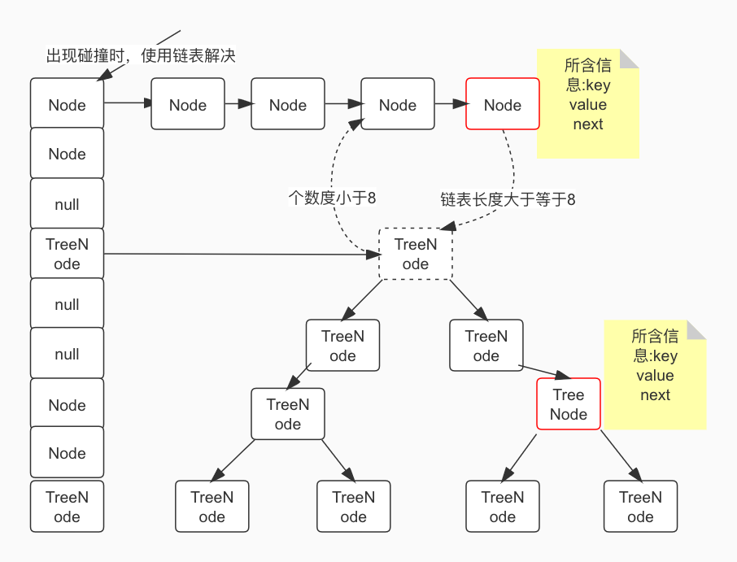
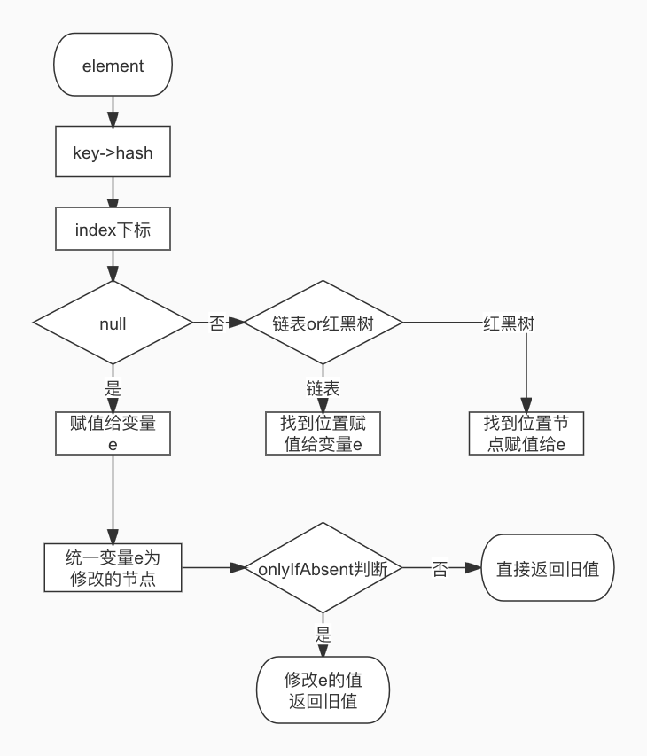

HashMap是特别常用的数据结构，源码很长,但底层原理并不复杂，本篇主要介绍hashmap的存储原理以及底层用到的数据结构，并对核心代码进行分析。
整体结构
结构图
HashMap 底层的数据结构主要是：数组 + 链表 + 红黑树。其中当链表的长度大于等于 8 时， 链表会转化成红黑树，当红黑树的大小小于等于 6 时，红黑树会转化成链表，整体的数据结构 如下：

类注释信息
- 允许 null 值，不同于 HashTable ，是线程不安全的;
- load factor（影响因子） 默认值是 0.75， 是均衡了时间和空间损耗算出来的值，较高的 值会减少空间开销（扩容减少，数组大小增长速度变慢），但增加了查找成本（hash 冲突增加，链表长度变长），不扩容的条件：数组容量 > 需要的数组大小 /load factor;
- 如果有很多数据需要储存到 HashMap 中，建议 HashMap 的容量一开始就设置成足够的 大小，这样可以防止在其过程中不断的扩容，影响性能；
- HashMap 是非线程安全的，我们可以自己在外部加锁，或者通过Collections#synchronizedMap 来实现线程安全，Collections#synchronizedMap 的实 现是在每个方法上加上了 synchronized 锁；
- 在迭代过程中，如果 HashMap 的结构被修改，会快速失败。
常见属性
1 | //初始容量 |
添加元素
整体流程
新增 key，value 大概的步骤如下：
- 空数组有无初始化，没有的话初始化；
- 如果通过 key 的 hash 能够直接找到值，跳转到 6，否则到 3；
- 如果 hash 冲突，两种解决方案：链表 or 红黑树；
- 如果是链表，递归循环，把新元素追加到队尾；
- 如果是红黑树，调用红黑树新增的方法；
- 通过 2、4、5 将新元素追加成功，再根据 onlyIfAbsent 判断是否需要覆盖；
- 判断是否需要扩容，需要扩容进行扩容，结束。
我们来画一张示意图来描述下：

源码实现
- 添加元素
1
2
3
4
5
6
7
8
9
10
11
12
13
14
15
16
17
18
19
20
21
22
23
24
25
26
27
28
29
30
31
32
33
34
35
36
37
38
39
40
41
42
43
44
45
46
47
48
49
50
51
52
53
54
55
56
57
58
59
60
61final V putVal(int hash, K key, V value, boolean onlyIfAbsent,
boolean evict) {
Node<K,V>[] tab; Node<K,V> p; int n, i;
//如果数组为空，初始化
if ((tab = table) == null || (n = tab.length) == 0)
n = (tab = resize()).length;
// hashCode的算法先右移16 在并上数组大小-1
// 如果当前索引位置是空的，直接生成新的节点在当前索引位置上
if ((p = tab[i = (n - 1) & hash]) == null)
tab[i] = newNode(hash, key, value, null);
// 如果hash冲突，当前索引上有值
else {
Node<K,V> e; K k;
// 如果key equals都相等，那么当前节点就是我们要新增的
if (p.hash == hash &&
((k = p.key) == key || (key != null && key.equals(k))))
e = p;
// 如果是红黑树，使用红黑树的方式新增
else if (p instanceof TreeNode)
e = ((TreeNode<K,V>)p).putTreeVal(this, tab, hash, key, value);
// 是个链表
else {
for (int binCount = 0; ; ++binCount) {
//如果是最后一个，还找不到和新增的元素相等的，直接新增
//节点是新增到链表最后的
if ((e = p.next) == null) {
//p.next是新增的节点，但是e仍然是null
//e和p.next都是持有对null的引用,即使p.next后来赋予了值
// 只是改变了p.next指向的引用，和e没有关系
p.next = newNode(hash, key, value, null);
//新增时，链表的长度大于等于8时，链表转红黑树
if (binCount >= TREEIFY_THRESHOLD - 1) // -1 for 1st
treeifyBin(tab, hash);
break;
}
//链表中有元素和新增的元素相等，结束循环
if (e.hash == hash &&
((k = e.key) == key || (key != null && key.equals(k))))
break;
//更改循环的当前元素
p = e;
}
}
//说明新增的元素table中原来就有
if (e != null) {
V oldValue = e.value;
if (!onlyIfAbsent || oldValue == null)
e.value = value;
// 当前节点移动到队尾
afterNodeAccess(e);
return oldValue;
}
}
++modCount;
//如果kv的实际大小大于扩容的门槛，开始扩容
if (++size > threshold)
resize();
// 删除不经常使用的元素
afterNodeInsertion(evict);
return null;
}链表添加细节
链表的添加比较简单，和LinkedList的追加实现是一样的，上面代码中描述的很清楚了，注意一点，当链表长度大于等于 8 时，此时的链表就会转化成红黑树，转化的方法是：treeifyBin，此方法 有一个判断，当链表长度大于等于 8，并且整个数组大小大于 64 时，才会转成红黑树，当数组 大小小于 64 时，只会触发扩容，不会转化成红黑树 ，转化成红黑树的过程也比较简单，此处不再赘述 。
至于为什么是8 才会转红黑树，源码中有注释，可以参照,大概意思如下文:
链表查询的时间复杂度是 O (n)，红黑树的查询复杂度是 O (log (n))。在链表数据不多的时候， 使用链表进行遍历也比较快，只有当链表数据比较多的时候，才会转化成红黑树，但红黑树需要 的占用空间是链表的 2 倍，考虑到转化时间和空间损耗，所以我们需要定义出转化的边界值。
在考虑设计 8 这个值的时候，我们参考了泊松分布概率函数，由泊松分布中得出结论，链表各 个长度的命中概率为：
1
2
3
4
5
6
7
8
9
10* 0: 0.60653066
* 1: 0.30326533
* 2: 0.07581633
* 3: 0.01263606
* 4: 0.00157952
* 5: 0.00015795
* 6: 0.00001316
* 7: 0.00000094
* 8: 0.00000006
* more: less than 1 in ten million意思是，当链表的长度是 8 的时候，出现的概率是 0.00000006，不到千万分之一，所以说正常 情况下，链表的长度不可能到达 8 ，而一旦到达 8 时，肯定是 hash 算法出了问题，所以在这 种情况下，为了让 HashMap 仍然有较高的查询性能，所以让链表转化成红黑树，我们正常写 代码， 使用 HashMap 时， 几乎不会碰到链表转化成红黑树的情况， 毕竟概念只有千万分之 一。
红黑树添加细节
红黑树是一种动态平衡的数据结构 和AVL树、跳表类似，都具有动态平衡的特点，其实本身没多难，只是插入元素和删除元素后，需要平衡调整-“打补丁”操作,具体的调整规则就不再叙述了，红黑树不了解的可先跳过。
1
2
3
4
5
6
7
8
9
10
11
12
13
14
15
16
17
18
19
20
21
22
23
24
25
26
27
28
29
30
31
32
33
34
35
36
37
38
39
40
41
42
43
44
45
46
47
48
49
50
51
52
53
54
55
56
57
58
59
60
61
62
63
64
65
66
67
68
69
70
71
72
73
74
75
76
77//红黑树中加入节点
//在计算新增的节点挂在那个节点上，是线程不安全的，
//关键在于没有锁住tab,table可能是在动态的变化的
//1:首先判断新增的节点在红黑树上是不是已经存在。
//2:不在的话，根据hashcode，或者自定义的comparTo,递归找到要挂载的节点
//3:和要挂载的节点建立父子，前后关系
//4:判断是否需要着色，旋转。
//5:对红黑树的根节点进行校验
//h：key 的hash值
final TreeNode<K,V> putTreeVal(HashMap<K,V> map, Node<K,V>[] tab,
int h, K k, V v) {
Class<?> kc = null;
boolean searched = false;
//找到根节点
TreeNode<K,V> root = (parent != null) ? root() : this;
//自旋
for (TreeNode<K,V> p = root;;) {
int dir, ph; K pk;
// p hash 值大于 h，说明 p 在 h 的右边
if ((ph = p.hash) > h)
dir = -1;
// p hash 值小于 h，说明 p 在 h 的左边
else if (ph < h)
dir = 1;
//要放进去key在当前树中已经存在了(equals来判断)
else if ((pk = p.key) == k || (k != null && k.equals(pk)))
return p;
//自己实现的Comparable的话，不能用hashcode比较了，需要用compareTo
else if ((kc == null &&
//得到key的Class类型，如果key没有实现Comparable就是null
(kc = comparableClassFor(k)) == null) ||
//当前节点pk和入参k不等
(dir = compareComparables(kc, k, pk)) == 0) {
if (!searched) {
TreeNode<K,V> q, ch;
searched = true;
if (((ch = p.left) != null &&
(q = ch.find(h, k, kc)) != null) ||
((ch = p.right) != null &&
(q = ch.find(h, k, kc)) != null))
return q;
}
dir = tieBreakOrder(k, pk);
}
TreeNode<K,V> xp = p;
//找到和当前hashcode值相近的节点(当前节点的左右子节点其中一个为空即可)
if ((p = (dir <= 0) ? p.left : p.right) == null) {
Node<K,V> xpn = xp.next;
//生成新的节点
TreeNode<K,V> x = map.newTreeNode(h, k, v, xpn);
//把新节点放在当前子节点为空的位置上
if (dir <= 0)
xp.left = x;
else
xp.right = x;
//当前节点和新节点建立父子，前后关系
xp.next = x;
x.parent = x.prev = xp;
if (xpn != null)
((TreeNode<K,V>)xpn).prev = x;
//balanceInsertion 对红黑树进行着色或旋转，以达到更多的查找效率，着色或旋转的几种场景如下
//着色：新节点总是为红色；如果新节点的父亲是黑色，则不需要重新着色；如果父亲是红色，那么必须通过重新
//着色或者旋转的方法，再次达到红黑树的5个约束条件
//旋转： 父亲是红色，叔叔是黑色时(前提是当前)
//如果当前节点是父亲的右节点，则进行左旋
//如果当前节点是父亲的左节点，则进行右旋
//moveRootToFront 方法是把算出来的root放到根节点上
moveRootToFront(tab, balanceInsertion(root, x));
return null;
}
}
}
查找元素
HashMap 的查找主要分为以下三步：
根据hashcode,算出数组的索引，找到槽点,槽点的key和查询的key相等，直接返回
判断当前节点有无 next 节点，有的话判断是链表类型，还是红黑树类型。
分别走链表和红黑树不同类型的查找方法。
链表查找
1
2
3
4
5
6
7// 采用自旋方式从链表中查找 key，e 初始为为链表的头节点
do { // 如果当前节点 hash 等于 key 的 hash，并且 equals 相等，当前节点就是我们要找的节点
// 当 hash 冲突时，同一个 hash 值上是一个链表的时候，我们是通过 equals 方法来比较 key 是否相同
if (e.hash == hash && ((k = e.key) == key || (key != null && key.equals(k))))
return e;
// 否则，把当前节点的下一个节点拿出来继续寻找 }
}while ((e = e.next) != null);红黑树查找
说下思路:
从根节点递归查找；
根据 hashcode，比较查找节点，左边节点，右边节点之间的大小，根本红黑树左小右大
的特性进行判断；
判断查找节点在第 2 步有无定位节点位置，有的话返回，没有的话重复 2，3 两步；
一直自旋到定位到节点位置为止。
如果红黑树比较平衡的话，每次查找的次数就是树的深度。
小结
HashMap 的内容虽然较多，但大多数 api 都只是对数组 + 链表 + 红黑树这种数据结构进行封 装而已，本文我们从新增和查找两个角度进行了源码的深入分析，分析了是如何对数组、链表 和红黑树进行操作的,更详细的内容可以自行阅读源码。

...
...
This is copyright.